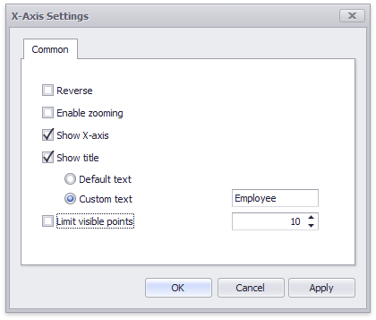

X-Axis
The X-axis is the axis of arguments.

This topic consists of the following sections.
Common X-Axis Settings
To access X-axis settings, use the X-Axis Settings button in the Diagram section of the Design Ribbon tab.

This will invoke the X-Axis Settings dialog.

This dialog contains the following settings.
| Setting | Description |
|---|---|
| Reverse | Allows you to reverse the X-axis. If the X-axis is reversed, its values are ordered from right to left. |
| Show X-axis | Allows you to hide and show the X-axis. |
| Show title | Allows you to hide and show the X-axis title. You can choose whether to use the default text or specify a custom string. |
| Enable zooming | Allows you to enable zooming for the X-axis. The X-axis' scroll bar provides the capability to perform navigation in the zoomed diagram. |
| Limit visible points | Allows you to limit the number of points displayed on the chart's diagram along the X-axis. The X-axis' scroll bar provides the capability to perform navigation if the number of all points exceeds the number of visible points. |
Numeric Format X-Axis Settings
If arguments are numeric, the X-Axis Settings dialog contains a Numeric Format tab. It allows you to specify the numeric display formats for X-Axis data, as described in the Formatting Data document.

The tab contains the following settings.
- Format type - Specifies format types for numeric values.
- Unit - Specifies the unit to convert the numeric values.
- Precision - Specifies the number of fractional digits to display.
- Currency - Specifies the currency symbol and format provided by the current culture settings.
- Culture - Specifies the name of a culture that defines the currency symbol and format.
- Include group separator - Specifies whether separators should be inserted between digit groups.
DateTime Format X-Axis Settings
For date and time arguments, the X-Axis Settings dialog displays a Numeric Format tab. It allows you to specify the date and time display formats for X-Axis data.
Using the dialog, you can override default formats applied according to the data grouping type, as described in the Grouping document. The following image shows the Date Time Format tab in the dialog when the grouping type is set to Exact Date. Click the Reset to Default button to return all format settings back to their default values.

The tab contains settings described in detail in the Formatting Data document.
Continuous and Discrete X-Axes
If the dimension in the Arguments section contains numeric data, the Chart can create either a continuous X-axis or a discrete X-axis.
| Continuous X-axis | Discrete X-axis |
|---|---|
| If a continuous axis is used, the distance between argument values is proportional to their values. | On a discrete axis, all argument values are an equal distance from each other. |
 |
 |
To specify the X-axis type in the Designer, invoke the data item menu for the argument dimension and select the axis type.

Note
Note that the continuous X-axis is not supported in OLAP mode.